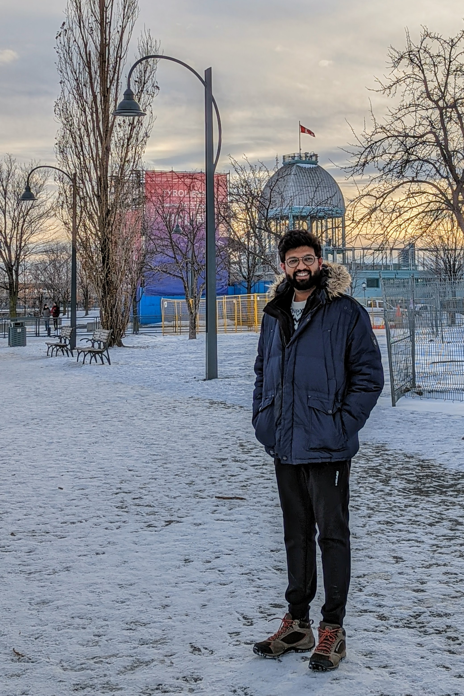

|
I am second year Computer Science (Artificial Intelligence) Ph.D. candidate with Prof. Doina Precup in Reasoning and Learning Lab (RLLab) at McGill University and Mila, Montreal, Canada. I did my Masters in Computer Science at McGill University and Mila, where I was advised by Doina Precup. Prior to my doctoral studies, I worked as Machine Learning Researcher at Sportlogiq with Norm Ferns. I was a software dev at Adobe Systems before I started my graduate studies.
Email / CV / Google Scholar / Twitter |
 |
{kind=link}
|
I am broadly interested in artificial intelligence and reinforcement learning. My research focuses towards designing principled reinforcement learning algorithms that are able to leverage structure, discover abstractions, and generalize across environments. I want to be able to learn generalizable temporal abstractions that can help in an agent in continual learning setup. |

|
Arushi Jain, Gandharv Patil, Ayush Jain, Khimya Khetarpal, Doina Precup AAAI, 2021 paper / code / talk / slides / poster |

|
Ayush Jain, Doina Precup AAMAS, 2018. paper |

|
Ayush Jain Master's thesis, McGill University, 2018. paper |

|
Arushi Jain, Ayush Jain, Doina Precup Safety, Risk and Uncertainty in RL Workshop, UAI, 2018. Women in ML (WiML) Workshop, NeurIPS , 2018. paper / slides / poster |
|
Source code and style from Jon Barron's website. |